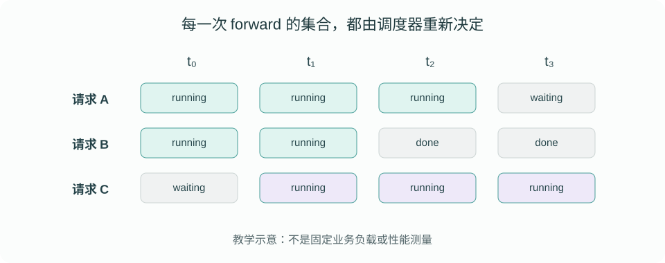
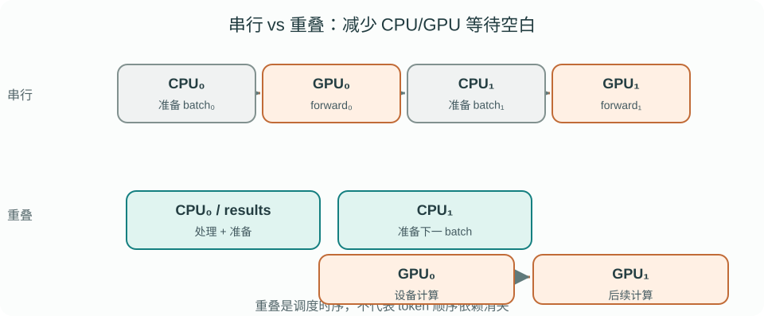

第 03 章 · 调度系统
SGLang Scheduler：动态批次与 CPU–GPU Overlap
从 Waiting/Running 请求的流转出发，解释调度为什么不是一个静态的 Batch 队列。
GPU forward 的时间不只取决于一次矩阵乘法。系统还要排队、匹配 prefix、分配 KV、整理采样结果，并决定下一步接纳哪些请求。调度器在每个迭代边界做选择，其 CPU 工作与设备执行的排列方式会影响空转与尾延迟。
本章结束后，你应该能
- 用 Bₜ 解释 iteration-level dynamic batching 与固定批处理的差异。
- 区分 waiting/running、KV 预算与每步 token budget。
- 理解 Overlap Scheduling 的时间交错与仍然存在的 token 依赖。
1. 从固定批处理的错误直觉出发
一个传统离线 batch 往往将一组输入凑齐后统一计算。但在线生成的请求到达时间不同、输出长度不同，若强制它们同进同出，已经完成的请求会占位，晚到请求要等待整批结束。Continuous batching 的中心思想是在生成迭代边界允许成员发生变化。
例如 A 需要三个输出 token、B 只需两个，而 C 在第二次迭代前到达。B 完成后应退出；C 有机会在新的调度轮进入。是否立即被接纳还取决于 token budget、KV 空间和策略，不是无条件插队。
2. Bₜ：把每次真正执行的集合画出来
定义 B_t 为第 t 个 forward 中实际参与执行的请求集合。它会随请求进入、完成、抢占或资源不足而变化。

3. 为什么不是所有等待请求都能立即入场？
调度器需要综合输入前缀是否命中、剩余 Prefill token、每步可处理的 token 预算、可分配的 KV slots、其他请求的优先级以及特定模型的能力。一个请求可能因为 KV 不足等待，也可能在资源竞争时被中断并稍后恢复。
Chunked Prefill 将长输入拆成可调度的多个部分，帮助与 Decode 工作混合，但“chunk”并不是每次固定相同的长度。将“最大 batch 请求数量”和“单步 token 预算”混成同一个参数会导致错误的容量判断。具体字段和当前默认值应对照 scheduler.py 的固定版本。
4. CPU–GPU Overlap：交错的是时间，不是计算依赖
CPU 可能在 GPU 执行上一批 forward 的同时处理先前结果、构造下一批数据。Overlap Scheduling 用更紧凑的迭代流水线减少某些串行等待，但不允许未来 token 在其前置结果尚未生成时“独立完成”。

严格区分：CPU 与 GPU 可以部分并发，不意味着单条请求可以跳过自回归 token 依赖，也不意味着所有硬件平台或版本都默认采用相同 overlap 路径。
5. 交互：三轮调度如何变化？
切换迭代观察 Batch 成员。状态仅用于理解“请求加入、完成、继续”，不是生产调度器的完整复现。
迭代边界上的活跃集合
t₀：A、B 在 running；C 尚未到达。下一轮仍需检查两者结束条件和 KV。
t₁：A、B 继续，C 到达并等待/等待接纳；可否同批进入需看预算。
t₂：B 完成退出，A 继续；若预算允许则接纳 C，batch 成员发生变化。
6. 源码阅读顺序与性能排障
从 Scheduler 入口 向下追踪 pending/running 请求、产生下一批的决策、forward 发起、结果处理与请求完成的清理。不要仅凭函数名的英文推断时序；结合调用图与真实运行配置看是否启用 overlap、哪些 worker 参与运行。
阅读清单（定位思路，不是可调用 API）：
1. 请求进入：新请求如何成为 waiting/可调度？
2. Batch construction：前缀匹配、KV 分配、token 预算何时决策？
3. Forward launch：CPU 何时交给 GPU 工作？
4. Output processing：何时完成采样、停止判断和回传？
5. Next iteration：哪些请求退出、哪些被接纳？做 profiling 时应分别记录 TTFT、ITL、排队时间、GPU 利用率和 KV 压力。提高 GPU 利用率却使 P99 TTFT 失控并不是可接受的无条件“优化”。
7. 这些图没有覆盖的复杂现实
不同模型可能需要额外的多模态预处理、适配器管理、attention backend metadata、跨 rank 协调或资源控制。调度算法还可能依据不同的路由/优先级政策。图中给的是稳定概念，而不是把指定上游 commit 的全部决策分支压成一张图。
下一章将把“单条请求”扩展成程序层面的并行分支：当多个 fork 使用同一段父 prompt，它们怎样被调度与共享前缀？
参考资料与版本边界
论文论述属于 2024 年原始设计；源码链接固定到 SGLang 0a8693fbe3a2（2026-11-23 检索），不自动代表其他发行版。本文没有宣称完成上游 GPU 级基准复现。